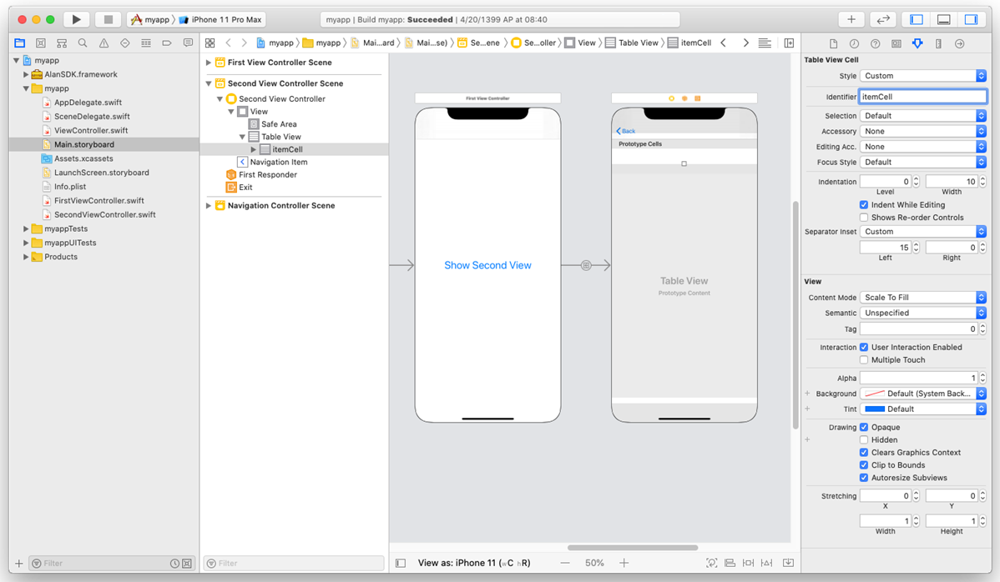
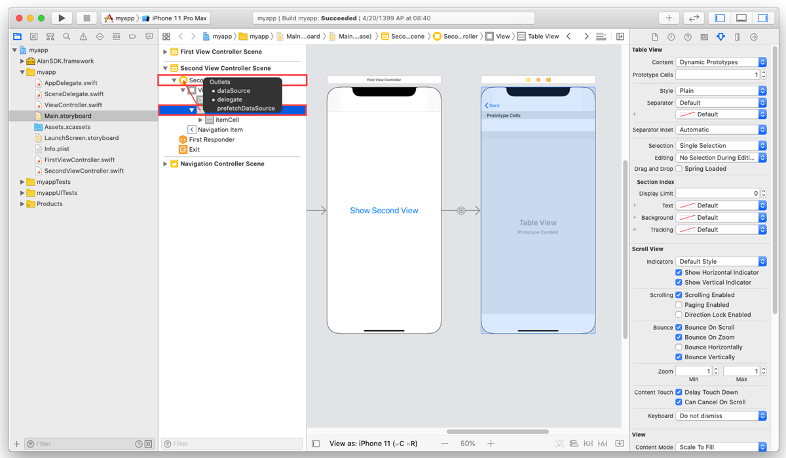
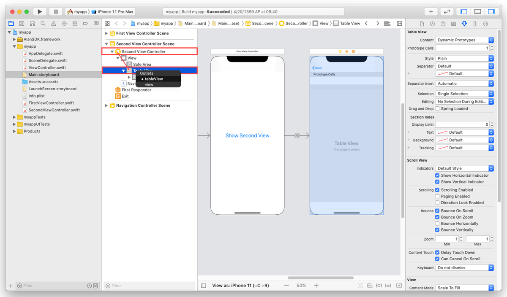

Highlighting items with voice¶
In an app with a multimodal UX, it is always a good idea to accompany voice commands with visual effects in the app. For example, if your app displays a list of items, you can add a voice command that will let the user check what items are available. And to support such a voice command visually, you can highlight each named item while Alan passes through the list.
In this tutorial, we will add a list of items to our app and create a voice command to go through this list with voice. When Alan names an item, this item will be highlighted in the app UI.
What you will learn¶
How to go through the list of items with voice
How to accompany voice commands with visual effects in the app
How to use the visual state to send custom data to the voice script
What you will need¶
For this tutorial, we will continue using the starter iOS app created in the previous tutorials. You can also use an example app provided by Alan: SwiftTutorial.part3.zip. This is an XCode project of the app with two views already integrated with Alan.
Step 1: Add a table view to the app¶
First, we need add a list of items to our app. Let’s add it to the second view.
In Xcode, open the app’s storyboard:
Main.storyboard.Open the Library and to the second View Controller, add the following elements: Table View and Table View Cells.
In the storyboard, select the Table Cell View, open the Attribute Inspector and in the Identifier field, specify the following ID:
itemCell. We will use this ID in the code later.We have created a table in the second view. Now we need to define with what data this table will be populated. In the storyboard, expand the second view in the left panel, press and hold the Control key on the keyboard, select the table element and drag and drop it onto the Second View Controller tag above. In the displayed window, select dataSource and delegate. This way, you tell your project which data source and delegate view to use.
Open the
SecondViewController.swiftfile and perform the steps below.At the top of the file, find the following line:
class SecondViewController: UIViewController {
and replace it with the following line to add the
UITableViewDataSourceprotocol declaration to our class:class SecondViewController: UIViewController, UITableViewDataSource {
In the
SecondViewControllerclass, add an outlet for our table view and an array with dummy data that will be displayed in the table:class SecondViewController: UIViewController, UITableViewDataSource { /// Table view to display data @IBOutlet weak var tableView: UITableView! /// Prepare some dummy data for the table view fileprivate let items = ["one", "two", "three", "four", "five"] ... }
In the
SecondViewControllerclass, add the following functions:... class SecondViewController: UIViewController, UITableViewDataSource { ... func tableView(_ tableView: UITableView, numberOfRowsInSection section: Int) -> Int { return self.items.count } func tableView(_ tableView: UITableView, cellForRowAt indexPath: IndexPath) -> UITableViewCell { /// Get the item from the dummy data array let item = self.items[indexPath.row] /// Prepare a cell let cell = tableView.dequeueReusableCell(withIdentifier: "itemCell", for: indexPath) as UITableViewCell /// Add text with the item name cell.textLabel?.text = item /// Return the cell return cell } ... }
Have a look at the code above. With these functions, we display values available in the
itemsarray in the Item Cells element having IDitemCellin the second View Controller.We now need to connect our code and the UI. Open the app’s storyboard:
Main.storyboard. In the storyboard, expand the second view in the left panel, press and hold the Control key on the keyboard, select the Second View Controller element and drag and drop it onto the Table View element below. In the displayed window, select tableView.Finally, let’s update our
setVisualStatea bit to send not only the name of the View Controller currently active, but also information about the data presented in the table. We will use this data on the voice script side later. Find the following line:rootVC.setVisualState(state: ["screen": "second"])
and replace it with:
rootVC.setVisualState(state: ["screen": "second", "items": self.items])
The code in the SecondViewController.swift file should look like this:
Run the app. In the first view, tap Show Second View, and the view with the table will be displayed:
Step 2: Add a voice command to pass through the items list¶
Now we need to get back to Alan Studio and add the following voice command:
intent(`List all available items`, p => {
let items = p.visual.items;
if (Array.isArray(items)) {
p.play(`The following items are available`);
for (let i = 0; i < items.length; i++) {
let item = items[i];
p.play({command: 'highlight', item: item});
p.play(`${item}`);
}
}
else {
p.play(`There are no items on this screen`);
}
});
Here is how this command works: when the user says: List all available items, Alan checks what our app has passed in the visual state. If the p.visual.items variable contains an array of items, Alan plays back: The following items are available, sends the command to highlight this item in the UI and names the current item with voice. If the p.visual.items variable is empty, Alan plays back: There are no items on this screen.
You can test it: run the app, navigate to the second view and say: List all available items. Alan will list all items added to the table. Then navigate back to the first view and say this command again. Alan will reply with: There are no items on this screen.
Step 3: Add the highlighting functions to the app¶
When the user says: List all available items, our app receives a set of commands to highlight current items. Let’s add highlighting functions and handle the highlight command on the app side so that a specific item is visually selected in the UI.
In Xcode, open the
SecondViewController.swiftfile and in theSecondViewControllerclass, add the function to highlight the selected item:class SecondViewController: UIViewController, UITableViewDataSource { ... func highlightItem(item: String) { /// Index of the item in the dummy data array guard let itemIndex = self.items.firstIndex(of: item), /// Get the cell by index let cell = self.tableView.cellForRow(at: IndexPath(row: itemIndex, section: 0)) else { return } /// Highlight the cell cell.setHighlighted(true, animated: true) /// Schedule removing of highlighting after some time DispatchQueue.main.asyncAfter(deadline: .now() + 0.4) { /// Remove highlighting from the cell cell.setHighlighted(false, animated: true) } } ... }
We also need to adjust our handler listening for the Alan events. Open the
ViewController.swiftfile and add a block of code handling thehighlightcommand received from the voice script (see the"highlight" commandcomment):class ViewController: UINavigationController { ... @objc func handleEvent(_ notification: Notification) { /// Get the user info object with JSON from Alan guard let userInfo = notification.userInfo, let jsonString = userInfo["jsonString"] as? String, let jsonData = jsonString.data(using: .utf8), let jsonObject = try? JSONSerialization.jsonObject(with: jsonData, options: []) as? [String: Any], /// Get the object with command data let commandObject = jsonObject["data"] as? [String: Any], /// Get the command name string let commandString = commandObject["command"] as? String else { return } /// "navigation" command if commandString == "navigation" { /// Get route name string guard let routeString = commandObject["route"] as? String else { return } /// Forward command if routeString == "forward" { DispatchQueue.main.async { self.goForward() } } /// Back command else if routeString == "back" { DispatchQueue.main.async { self.goBack() } } } /// "highlight" command else if commandString == "highlight" { /// Get item name string guard let itemString = commandObject["item"] as? String else { return } DispatchQueue.main.async { self.highlightItem(item: itemString) } } } ... }
The last thing we need to do is to call the
highlightItem()function. In theViewController.swiftfile, in theViewControllerclass, add the following function:class ViewController: UINavigationController { ... fileprivate func highlightItem(item: String) { /// Get the second view controller if let secondVC = self.viewControllers.last as? SecondViewController { /// Call "highlight" on the second view controller secondVC.highlightItem(item: item) } } ... }
Now, when our app receives the highlight command, it calls the highlightItem() function for the second View Controller.
You can test how it works: run the app, navigate to the second view and say: List all available items. Alan will list all items added to the table, and each named item will be highlighted.
What you finally get¶
After you pass through this tutorial, you will have an iOS app with a table in the second app view and will be able to check what items are added to this table with voice. You can get an example of such an app from the Alan GitHub to make sure you have set up your app correctly.
SwiftTutorial.part4.zip: XCode project of the app
SwiftTutorial.part4.js: voice commands used for this tutorial
What’s next?¶
Have a look at the next tutorial: Triggering voice script actions without a command.